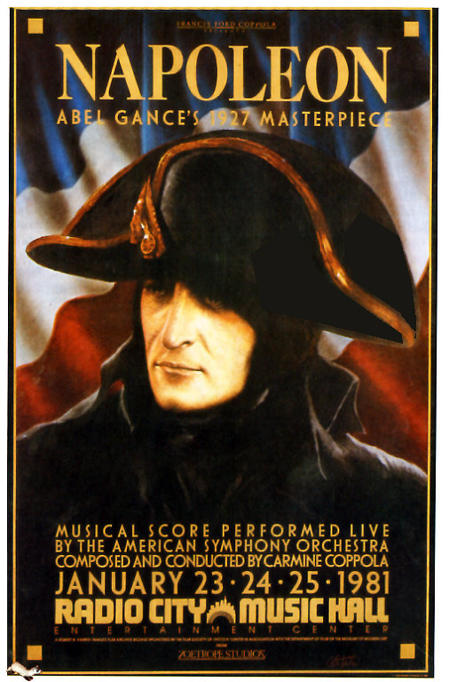
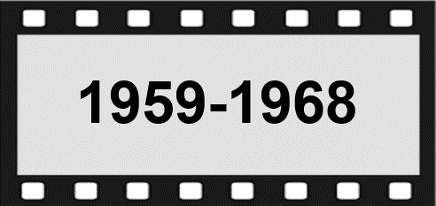
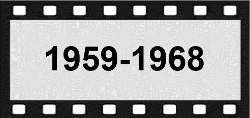

The Beginnings (1895-1919)
The birth of cinema is credited to two Frenchmen,the inventors Auguste and Louis Lumière who, in 1895
filed a patent for their Cinématographe, a device that not only recorded moving images on film, but also allowed them to be projected onto a screen. At first the Lumières had no idea what to do with thein creation, but they caused a sensation wher their first film. La Sortie de l'usine Lumière à Lyon, was presented at a meeting of the Société d'encouragement pour l'industrie nationale in Paris on 22nd March 1895. In December of the same year Parisians were able to pay to watch the film, and several others, at public screenings in the Salon indien of the Grand Caféon the Boulevard des Capucines.Cinema had arrived although its inventors saw it as no more than a passing fad.
"The cinema is an invention without a future" said Louis Lumière.
The early Lumière cameras had no sound capability.
 The films which the Lumières recorded with their Cinématographe were silent shorts that merely represented scenes from everyday life, the moving picture equivalent of photoqraphs. The first person to recognise cinema as a new art form in its own right and see its potential as a medium of entertainment was another Frenchman Georges Méliès. At his specially constructed film studio in Paris, Méliès used his experience as a stage magician to create some startlingly inventive fantasy films, the best known of which is Le Voyage dans la Lune (1902), the world's first science-fiction film. Méliès's remarkably inventive films (which numbered over 500, some painstakingly coloured by hand) proved to be phenomenally successful around the world and established cinema as the latest form of mass entertainment one that would soon overtake theatres and music halls in popularity.
The films which the Lumières recorded with their Cinématographe were silent shorts that merely represented scenes from everyday life, the moving picture equivalent of photoqraphs. The first person to recognise cinema as a new art form in its own right and see its potential as a medium of entertainment was another Frenchman Georges Méliès. At his specially constructed film studio in Paris, Méliès used his experience as a stage magician to create some startlingly inventive fantasy films, the best known of which is Le Voyage dans la Lune (1902), the world's first science-fiction film. Méliès's remarkably inventive films (which numbered over 500, some painstakingly coloured by hand) proved to be phenomenally successful around the world and established cinema as the latest form of mass entertainment one that would soon overtake theatres and music halls in popularity.
Georges Méliès may have created the voracious public appetite for cinema, but it was two other Frenchmen, Charles Pathe and Léon Gaumont who derived most of the benefit when they founded their production and distribution companies, Pathé and Gaumont (which remain the most important in France to this day). Léon Gaumont was fortunate to have on his staff Alice Guy, who proved to be an extremely talented filmmaker. Originally employed as a secretary, Guy made around 400 short films in a diverse range of genres between 1896 and 1920 and deserves to be credited not only as the world's first woman film director but also as the person who invented film narrative. Over at Pathé, a former café entertainer Ferdinand Zecca was blazing a trail as a director of naturalistic dramas. Zecca was called upon to direct the company's most lavish and sophisticated films, the grandest of which was the 44 minute long La Vie et la passion de Notre Seigneur Jésus Christ (1903), which he co-directed with another prominent figure at Pathé, Lucien Nonguet.
1905 marked the arrival of cinemas first international superstar, Max Linder. Over the course of the next twenty years, Linder would appear in over 200 films for Pathé around half of which he directed himself, and his work would have a great influence on the subsequent giants of film comedy particularly Charlie Chaplin. At Gaumont, Louis Feuillade was achieving comparable success with his phenomenally popular thriller serials: Fantômas, Les Vampires, and Judex.
In the years preceding the First World War, France was the dominant player in the film production industry, with America lagging some way behind. The outbreak of war in 1914 was to change this forever. A shortage of film stock led the government to impose an embargo on commercial filmmaking in France throughout the duration of the war, and this allowed the Americans to steal a march on the international film market. By 1919, the French film industry was in a sorry state, with French films contributing less than 20 per cent to box office receipts (most of the rest was supplied by American films).
The Age of Silence (1920-1929)
The emergence of a wave of avant-garde filmmakers in the early 1920s rapidly restored the prestige of French cinema and provided the bedrock for what is now termed the auteur tradition. Of these the most prominent were Marcel L'Herbier Jean Epstein, Germaine Dulac, René Clain and Abel Gance, who each had a flair for experimentation and were strongly influenced by the latest artistic trends, such as dadaism and surrealism. L'Herbier's L'Inhumaine (1924), Epstein's La Chute de la maison Usher (1928), Gance's La Roue (1923) and Clair's Paris qui dort (1925) all broke new qround in filming and editing technique, blurring the boundaries between reality and the imagination. Gance's Napoléon (1927) was the most ambitious French film of this era, a six-hour long cinematic tour de force that is now widely acknowledged as one of the greatest of all silent films.
Historical dramas and literary adaptations were the most important genres of the 1920s, and films became more visually daring and longer, partly through the need to compete with American imports. Henri
Fescourt's Les Misérables (1925) and Monte Cristo (1929) are typical of the decades French period blockbusters. Alberto Cavalcanti, Jacques Feyder, Raymond Bernard and Louis Delluc were four other filmmakers of this period who were to have a lasting impact. The great Danish cineaste Carl Theodor Dreyer contributed one of the most important French films: La Passion de Jeanne d'Arc (1928) Luis Buñuel made his directing debut in collaboration with Salvador Dalí with his surreal short Un chien andalou (1929), one of the weirdest films ever made. Despite this abundance of talent, French cinema was still under threat from the Hollywood behemoth, so the government introduced a quota system in 1928 which restricted the number of foreign films that could be shown in cinemas across France.
Content designed and maintained by French Films. Org
 
